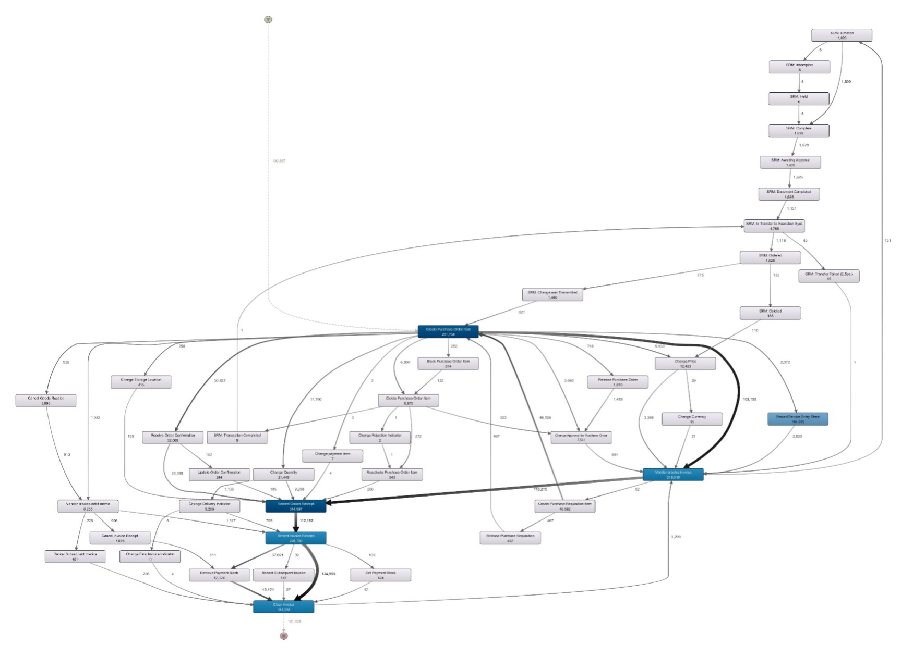
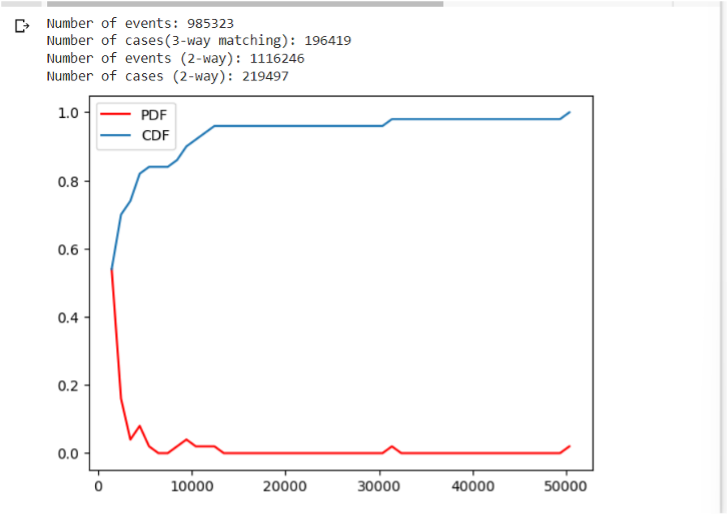
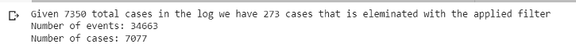
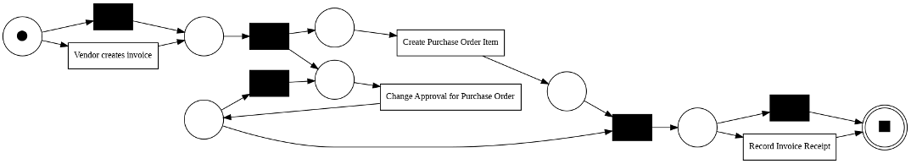

Business Information Systems Project
   Project Overview
This project, titled "Process Mining in the Coatings and Paints Industry: The Purchase Order Handling Process," focuses on the application of process mining to analyze the purchase order handling process for a multinational company in the coatings and paints industry. The project was part of the Business Process Intelligence Challenge 2019 and aimed to answer business questions related to compliance and efficiency using real-life event logs from the company.
Technologies Used
Process mining tools such as Disco for event log filtering and visualization. Python, primarily for data filtering and analysis. Process mining algorithms like Petri nets, ILP Miner, Heuristic Miner, and BPMN. Google Colab for code execution and result visualization.
Key Learnings
• How to apply process mining techniques to real-world datasets, focusing on compliance analysis.
• Understand the handling of large event logs,
• Filtering data for relevance, and using models to discover processes.
• Tools like Python and Disco are used for data filtering,
and visualization tools (heatmaps, directly follows graphs) are employed to uncover insights about process efficiency and compliance